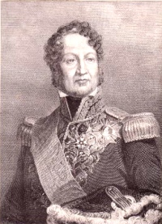

1830-1848Monarchie de Juillet
Louis-PhilippeRoi des Français
FrancMaintenu
1848Révolution
Après les Trois Glorieuses (27-29 juillet 1830), Louis-Philippe d'Orléans devient « roi des Français ». La Monarchie de Juillet s'appuie sur le système monétaire existant (franc germinal). Les monnaies portent la nouvelle effigie et la légende adaptée au changement de régime.
Cette période voit la poursuite des frappes d'or, d'argent et de bronze dans un cadre technique stable. La Révolution de 1848 y met fin et instaure la IIe République.
Sources : infonumis.info · catalogues Le Franc & Gadoury
Les monnaies du règne de Louis-Philippe Ier
'" />40 Francs LOUIS-PHILIPPE, Tête laurée
Date : 1831 A (Paris) ; 62.323 ex. (pour un total de fabrication de 773.088 ex. de 1831 à 1839)
Or 900 ‰ ; 26 mm ; 12.89 (théorique 12.90g)
Circulation : 1831-1928 (pendant 97 ans)
Tranche en relief : * DIEU PROTEGE LA FRANCE
Avers : LOUIS PHILIPPE I ROI DES FRANÇAIS ; Tête de Louis-Philippe Ier à gauche, portant une couronne de chêne terminée par un ruban descendant le long du cou, l'une des extrémités revenant sur le cou ; au-dessous DOMARD F. au dessous du cou contre le listel.
Revers : 40 / FRANCS en deux lignes, au-dessus du millésime, le tout dans une couronne nouée par un ruban à sa base, formée à gauche d'une branche de laurier, à droite d'une branche d'olivier ; au-dessous différent du graveur général encadré de la lettre d'atelier à droite et du différent de directeur à gauche.
Références : F.546 G.1106
Or 900 ‰ ; 26 mm ; 12.89 (théorique 12.90g)
Circulation : 1831-1928 (pendant 97 ans)
Tranche en relief : * DIEU PROTEGE LA FRANCE
Avers : LOUIS PHILIPPE I ROI DES FRANÇAIS ; Tête de Louis-Philippe Ier à gauche, portant une couronne de chêne terminée par un ruban descendant le long du cou, l'une des extrémités revenant sur le cou ; au-dessous DOMARD F. au dessous du cou contre le listel.
Revers : 40 / FRANCS en deux lignes, au-dessus du millésime, le tout dans une couronne nouée par un ruban à sa base, formée à gauche d'une branche de laurier, à droite d'une branche d'olivier ; au-dessous différent du graveur général encadré de la lettre d'atelier à droite et du différent de directeur à gauche.
Références : F.546 G.1106
20 Francs LOUIS-PHILIPPE, Tête laurée
Date : 1847 A (Paris) ; 284.497 ex. (pour un total de fabrication de 6.760.369 ex. de 1832 à 1848)
Or 900 ‰ ; 21 mm ; 6.42g (théorique 6.45g)
Circulation : 1832-1928 (pendant 96 ans)
Tranche en relief : *** DIEU PROTEGE LA FRANCE
Avers : LOUIS PHILIPPE I ROI DES FRANÇAIS ; Tête de Louis-Philippe Ier à gauche, portant une couronne de chêne terminée par un ruban descendant le long du cou, l'une des extrémités revenant sur le cou ; au-dessous DOMARD F. au dessous du cou contre le listel.
Revers : 20 / FRANCS en deux lignes, au-dessus du millésime, le tout dans une couronne nouée par un ruban à sa base, formée à gauche d'une branche de laurier, à droite d'une branche d'olivier ; au-dessous différent du graveur général encadré de la lettre d'atelier à droite et du différent de directeur à gauche.
Références : F.527 G.1031
5 Francs LOUIS-PHILIPPE, Tête laurée
Date : 1847 BB (Strasbourg) ; 1.613.128 ex. (pour un total de fabrication de 57.013.085 ex. de 1844 à 1848)
Argent 900 ‰ ; 37 mm ; 24.68g (théorique 25g)
Circulation : 1844-1928 (pendant 84 ans)
Tranche en relief : *** DIEU PROTEGE LA FRANCE
Avers : LOUIS PHILIPPE I ROI DES FRANÇAIS ; Tête de Louis-Philippe Ier à droite, portant une couronne de chêne terminée par un ruban descendant le long du cou, l'une des extrémités revenant sur le cou ; au-dessous DOMARD F. au dessous du cou contre le listel.
Revers : 5 / FRANCS en deux lignes, au-dessus du millésime, le tout dans une couronne nouée par un ruban à sa base, formée à gauche d'une branche de laurier, à droite d'une branche d'olivier ; au-dessous différent du graveur général encadré de la lettre d'atelier à droite et du différent de directeur à gauche.
Références : F.325 G.677a+
2 Francs LOUIS-PHILIPPE
Date : 1847 A (Paris) ; 798.285 ex. (pour un total de fabrication de 12.442.088 ex. de 1831 à 1848)
Argent 900 ‰ ; 27 mm ; 9.86g (théorique 10g)
Circulation : 1831-1864 (pendant 33 ans)
Tranche cannelée
Avers : LOUIS PHILIPPE I ROI DES FRANÇAIS ; Tête de Louis-Philippe Ier à droite, portant une couronne de chêne terminée par un ruban descendant le long du cou, l'une des extrémités revenant sur le cou ; au-dessous DOMARD F. au dessous du cou contre le listel.
Revers : 2 / FRANCS en deux lignes, au-dessus du millésime, le tout dans une couronne nouée par un ruban à sa base, formée à gauche d'une branche de laurier, à droite d'une branche d'olivier ; au-dessous différent du graveur général encadré de la lettre d'atelier à droite et du différent de directeur à gauche.
Références : F.260 G.520
1/2 Franc LOUIS-PHILIPPE
Date : 1835 A (Paris) ; 831.202 ex. (pour un total de fabrication de 16.482.648 ex. de 1831 à 1845)
Argent 900 ‰ ; 18 mm ; 2.49g (théorique 2.50g)
Circulation : 1831-1864 (pendant 33 ans)
Tranche cannelée
Avers : LOUIS PHILIPPE I ROI DES FRANÇAIS ; Tête de Louis-Philippe Ier à droite, portant une couronne de chêne terminée par un ruban descendant le long du cou, l'une des extrémités revenant sur le cou ; au-dessous DOMARD F. au dessous du cou contre le listel.
Revers : 1/2 / FRANC en deux lignes, au-dessus du millésime, le tout dans une couronne nouée par un ruban à sa base, formée à gauche d'une branche de laurier, à droite d'une branche d'olivier ; au-dessous différent du graveur général encadré de la lettre d'atelier à droite et du différent de directeur à gauche.
Références : F.182 G.408
1/4 Franc LOUIS-PHILIPPE
Date : 1840 A (Paris) ; 1.246.272 ex. (pour un total de fabrication de 18.122.083 ex. de 1831 à 1845)
Argent 900 ‰ ; 15 mm ; 1.25g (théorique 1.25g)
Circulation : 1831-1852 (pendant 21 ans)
Tranche cannelée
Avers : LOUIS PHILIPPE I ROI DES FRANÇAIS ; Tête de Louis-Philippe Ier à droite, portant une couronne de chêne terminée par un ruban descendant le long du cou, l'une des extrémités revenant sur le cou ; au-dessous DOMARD F. le long du listel.
Revers : 1/4 / FRANC en deux lignes, au-dessus du millésime, le tout dans une couronne nouée par un ruban à sa base, formée à gauche d'une branche de laurier, à droite d'une branche d'olivier ; au-dessous différent du graveur général encadré de la lettre d'atelier à droite et du différent de maître à gauche.
Références : F.166 G.355
25 Centimes LOUIS-PHILIPPE
Date : 1847 A (Paris) ; 2.999.520 ex. (pour un total de fabrication de 8.424.604 ex. de 1845 à 1848)
Argent 900 ‰ ; 15 mm ; 1.27g (théorique 1.25g)
Circulation : 1845-1852 (pendant 7 ans)
Tranche cannelée
Avers : LOUIS PHILIPPE I ROI DES FRANÇAIS ; Tête de Louis-Philippe Ier à droite, portant une couronne de chêne terminée par un ruban descendant le long du cou, l'une des extrémités revenant sur le cou ; au-dessous DOMARD F. le long du listel.
Revers : 25 / CENT. en deux lignes, au-dessus du millésime, le tout dans une couronne nouée par un ruban à sa base, formée à gauche d'une branche de laurier, à droite d'une branche d'olivier ; au-dessous différent du graveur général encadré de la lettre d'atelier à droite et du différent de maître à gauche.
Références : F.167 G.357
Argent 900 ‰ ; 15 mm ; 1.27g (théorique 1.25g)
Circulation : 1845-1852 (pendant 7 ans)
Tranche cannelée
Avers : LOUIS PHILIPPE I ROI DES FRANÇAIS ; Tête de Louis-Philippe Ier à droite, portant une couronne de chêne terminée par un ruban descendant le long du cou, l'une des extrémités revenant sur le cou ; au-dessous DOMARD F. le long du listel.
Revers : 25 / CENT. en deux lignes, au-dessus du millésime, le tout dans une couronne nouée par un ruban à sa base, formée à gauche d'une branche de laurier, à droite d'une branche d'olivier ; au-dessous différent du graveur général encadré de la lettre d'atelier à droite et du différent de maître à gauche.
Références : F.167 G.357
10 Cent. LOUIS-PHILIPPE (pour les Colonies)
Date : 1844 A (Paris) ; 000 ex. (pour un total de fabrication de 000 ex. de 0000 à 0000)
Degré de rareté : R2
Métal ; 30 mm ; 20.78g (théorique 0g***********)
Circulation : 0000-0000
Tranche : xxx
Avers : xxx
Revers : xxx
Références : Lec.318 KM#13
5 Cent. LOUIS-PHILIPPE (pour les Colonies)
Date : 1839 A (Paris) ; 000 ex. (pour un total de fabrication de 000 ex. de 0000 à 0000)
Degré de rareté : R1
Métal ; 26.5 mm ; 10.09g (théorique 0g******)
Circulation : 0000-0000
Tranche : xxx
Avers : xxx
Revers : xxx
Références : Lec.308 KM#12